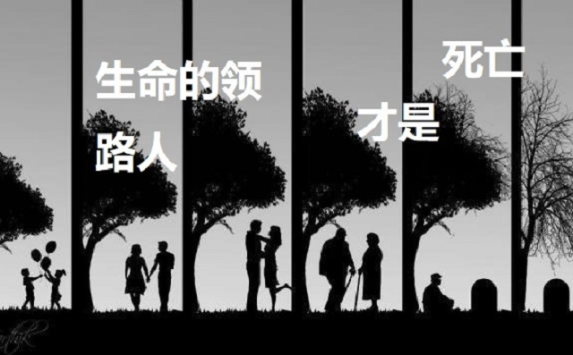
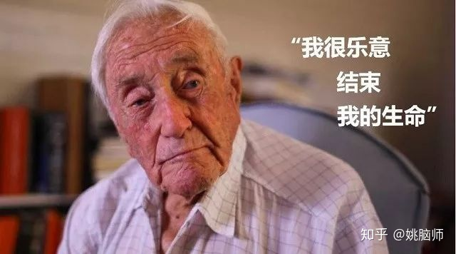
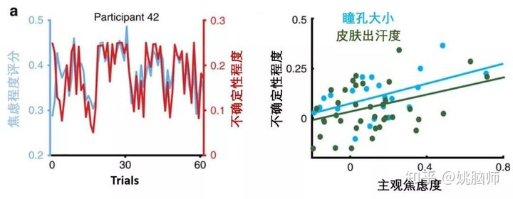
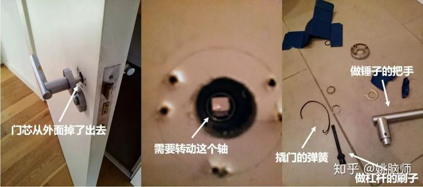
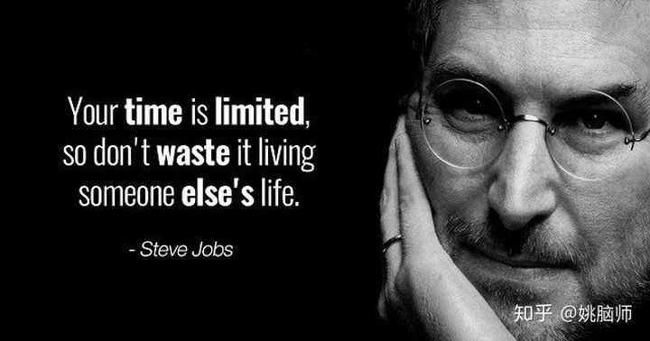

“我过去一年的生活不尽如意，因此我很乐意结束我的生命。”
这是著名生态和植物学家 David Goodall 老先生5月10号在安乐死前对记者说的话。
老先生出生于伦敦，在澳大利亚开始了他的学术生涯。他一生扑在学术上，直到102岁时还坚持在大学工作。他虽然没有身患绝症，但是近两年的生活质量大不如前。

于是，他选择了安乐死。
他在死前享用了他最爱的炸鱼薯条和奶酪蛋糕，然后听着贝多芬第九交响乐的 Ode to Joy 平静地离开了人世，享年104岁。
很多人不理解老先生为什么要自行了断。在咱们的社会里，我们大都对死亡都有一种莫名的恐惧，想活还活不了那么久呢。
1 为什么我们会怕死？
理性的讲，我们并没有理由害怕死亡。
古希腊的哲学家伊壁鸠鲁（Epicurus）早在两千多年前就已经悟出了生死的道理。他说：“死亡和我毫不相干。因为只要我还存在，死亡就还未降临。当死亡来时，我便不复存在，于是不再与我相干”。
世间万物都有始有终。就连我们所在的宇宙，不是持续膨胀到绝对零度，就是收缩到时空的奇点，终有画上句号的一天。况且很多时候终点恰恰是生命最美的篇章。烂漫的樱花，美在稍纵即逝。难忘的电影，胜在回味无穷。
可我们为什么还是会害怕死亡呢？
一个重要原因是因为我们虽然知道自己要死，却不能预测什么时候死，或是怎么死。这种对死亡的不确定性让大脑感到非常的焦虑。
科学家发现不确定的事情比已经确定的坏事还要让人焦虑和痛苦 [1]。比如表白前不知对方将如何反应要比已经被拒绝更令人焦虑。上班有可能迟到比已经迟到了要更令人焦虑。

大脑喜欢关注不确定的事物，这在进化上是有优势的。在自然环境下，任何未知事物都有可能对个体的生存产生威胁。为了能应对潜在的威胁，大脑便消耗能量在它的 “运动中心” 产生大量的多巴胺，让身体时刻做好应对的准备。一旦有危险出现，大脑就能及时的作出反应，以保证个体的生存。
可是当未知事物超出了我们可控的范围，比如我们没有办法预测自己死亡的时间和方式，大脑就会长时间的处于焦虑和恐惧的状态。
虽然我们对死亡很焦虑，不成想真正面临死亡的人反而放得很轻松。
2 意料之外的正能量
2017年发表的一项研究发现身患绝症的人反而有更积极的精神状态 [2]。
该研究分析了绝症病人（如癌症）和想象自己身患绝症的健康人写的博客。他们发现相比之下，**绝症病人写的博客有更多的正面用语和更少的负面用语。**随着死期的临近，绝症病人的正面用词比率呈上升状态。虽然他们的身体日渐虚弱，但是他们的精神状态反而越来越好。

和我们的直觉相反，经历死亡可能没有大多数人想象的那么黑暗。
这一方面，可能是因为确定了死期，大脑也便不再焦虑这件事，而是把更多的注意力放在当下的生活上。另一方面，可能是因为这世上没有比死亡更可怕的事情了，所以世间一切相比之下都显得更加美好。难怪会有人说，除却生死，没有什么是大事。
这样看来，我们也许可以理解为什么 David Goodall 老先生自愿从澳大利亚不远万里到瑞士接受安乐死。老先生这样做能自己决定生命的长度、降低了未来的不确定性，从而减轻了对死亡的焦虑。老先生能够趁着自己脑子还清醒，在家人陪伴下以自己喜欢的方式告别，这比插满管子逝于ICU的病床上要有尊严的多。
然而对大多数读者来说，死亡还很遥远，未来也还很不确定。
如何才能摆脱对死亡的焦虑呢？
3 死亡是生命的领路人
人们说，人在临死的时候会在一瞬间回忆自己的一生。
姚脑师刚搬到曼城的第一晚就意外地把自己反锁在了厕所里。我在关门的时候，门芯意外的掉了出去，怎么转门把手也开不起门。
我当时冷汗就下来了。我刚刚搬来，还没有跟家里说我的住址，上厕所的时候也没有带手机。没有人知晓我的行踪。
我这是要饿死在厕所里吗？
我不想死。
我算了算，觉得自己能靠厕所里的水存活两周左右。那个时候，家里联系不上我可能早就报警了吧。也许我是可以获救的。
想到这里我安心了许多。开始环顾四周，寻找出路。尝试撞门砸墙失败以后，我把门把手拽了下来。我发现门把手里面有一个韧性不错的弹簧。于是我用门把手做锤子，把弹簧改造成了一个简易的门芯。我花了大约三个小时，用了各种杠杆终于把门撬开了。

我瘫倒在地上。
回顾自己的一生，我真实的意识到自己是多么的碌碌无为。
我很懊恼，因为觉得这世上没有比饿死在厕所里更烂的死法了。
也就是这个时候，我意识到我们避之而不及的死亡，正是我们生命的领路人。
我们总觉得生命是理所当然的。但当死亡突然降临之时，我们又后悔不已。也许你会后悔没有尝试自己想要的生活，也许你还没开始自己毕生的事业，也许你放不下自己的亲人。
直面死亡，能帮助我们更好的生活。
如果你明天会死，你现在想做什么？ 如果是十天后死呢？ 十个月后呢？ 十年？
接受死亡这个不速之客能让你更关注生命中重要的事情。你不再无脑地刷朋友圈，不再关注别人对自己的看法，不再靠吃吃吃买买买打发时间。你在地球上的时间有限，总得花在最有意义的事情上吧。

当死亡来临的时候，你能不留遗憾的跟他走吗？在你的墓碑上，人们会怎样描述你？人们会因为什么而记得你？你有让这个世界变得更好吗？
Live as if you were to die tomorrow, Learn as if you were to live forever.
是我们直面死亡，勇敢书写生命篇章的时候了。
参考文献
- De Berker, A. O., Rutledge, R. B., Mathys, C., Marshall, L., Cross, G. F., Dolan, R. J., & Bestmann, S. (2016). Computations of uncertainty mediate acute stress responses in humans. Nature communications, 7, 10996.
- Goranson, A., Ritter, R. S., Waytz, A., Norton, M. I., & Gray, K. (2017). Dying is unexpectedly positive. Psychological science, 28(7), 988-999.